Cathedral

Green Offset: (5, 2)
Red Offset: (12, 3)
The goal of this project was to take digitized glass plate negatives from the early 1900s and combine their red, green, and blue color channels to create full color images.
To do this I used the Euclidean distance (L2 norm) metric to score how well the channels aligned. The lower the difference between the overlapping pixels, the better the alignment. Since the edges of these historical glass plates have a ton of noise and mismatched borders, I cropped out the outer 10 percent of the images before calculating the differences so the algorithm would only focus on the actual subject matter.
For small images a simple exhaustive search over a 30x30 pixel window worked perfectly. But for the massive high resolution files checking every single pixel offset took way too long. To fix this I built an image pyramid. The algorithm shrinks the images down by a factor of 2 over and over until they are small enough to align quickly. Then it scales those initial coarse offsets back up and refines them at each resolution step. This made the whole alignment process run super fast while still being highly accurate.
These are the smaller .jpg images that were aligned using the basic exhaustive search method.
Green Offset: (5, 2)
Red Offset: (12, 3)

Green Offset: (-3, 2)
Red Offset: (3, 2)

Green Offset: (3, 3)
Red Offset: (6, 3)
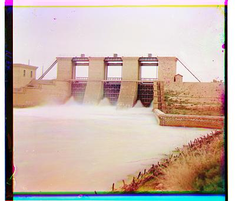
Green Offset: (3, -1)
Red Offset: (9, -2)
These are the large .tif files that required the image pyramid approach for efficient processing.

Green Offset: (60, 17)
Red Offset: (124, 14)
Green Offset: (42, 17)
Red Offset: (90, 23)
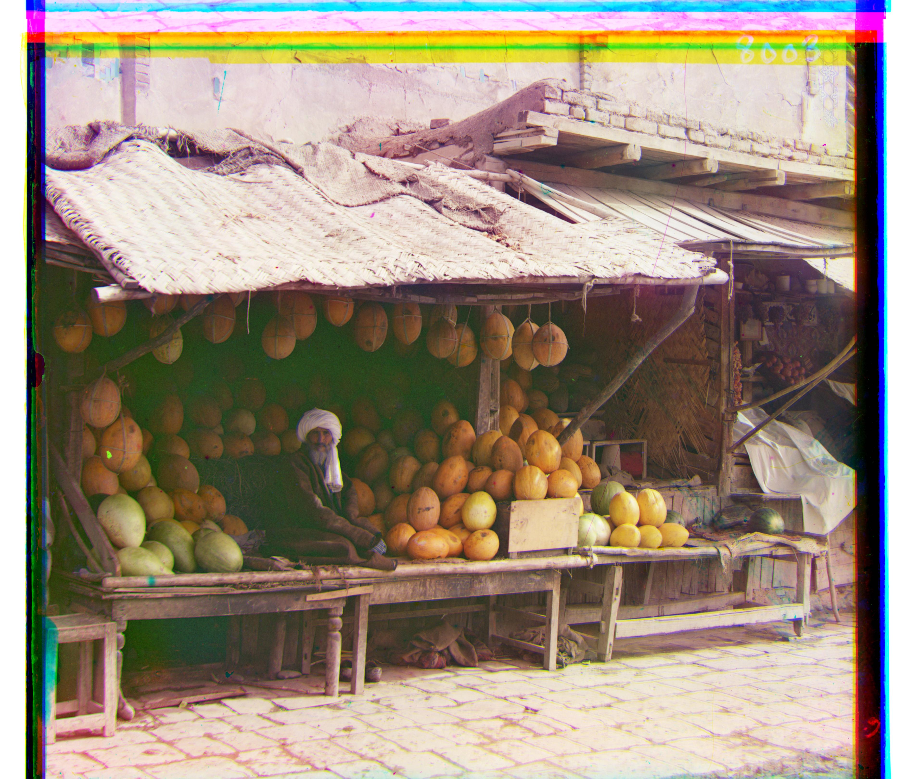
Green Offset: (80, 10)
Red Offset: (177, 13)

Green Offset: (78, 29)
Red Offset: (176, 37)
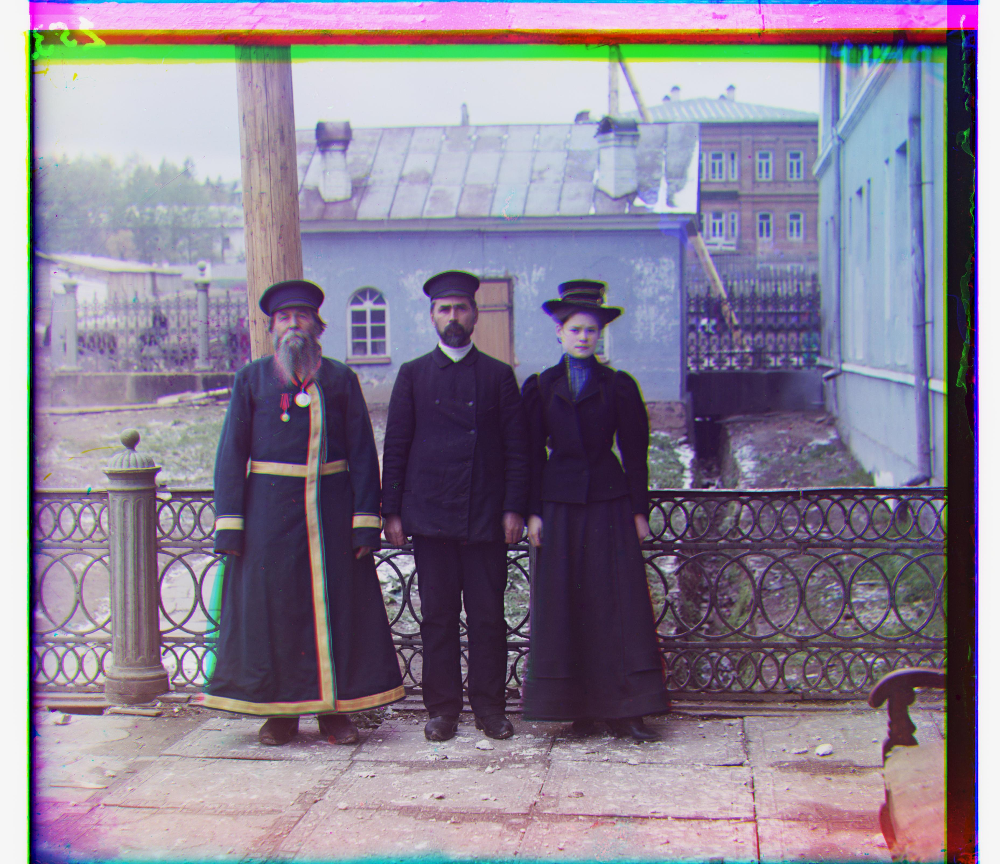
Green Offset: (54, 12)
Red Offset: (111, 9)
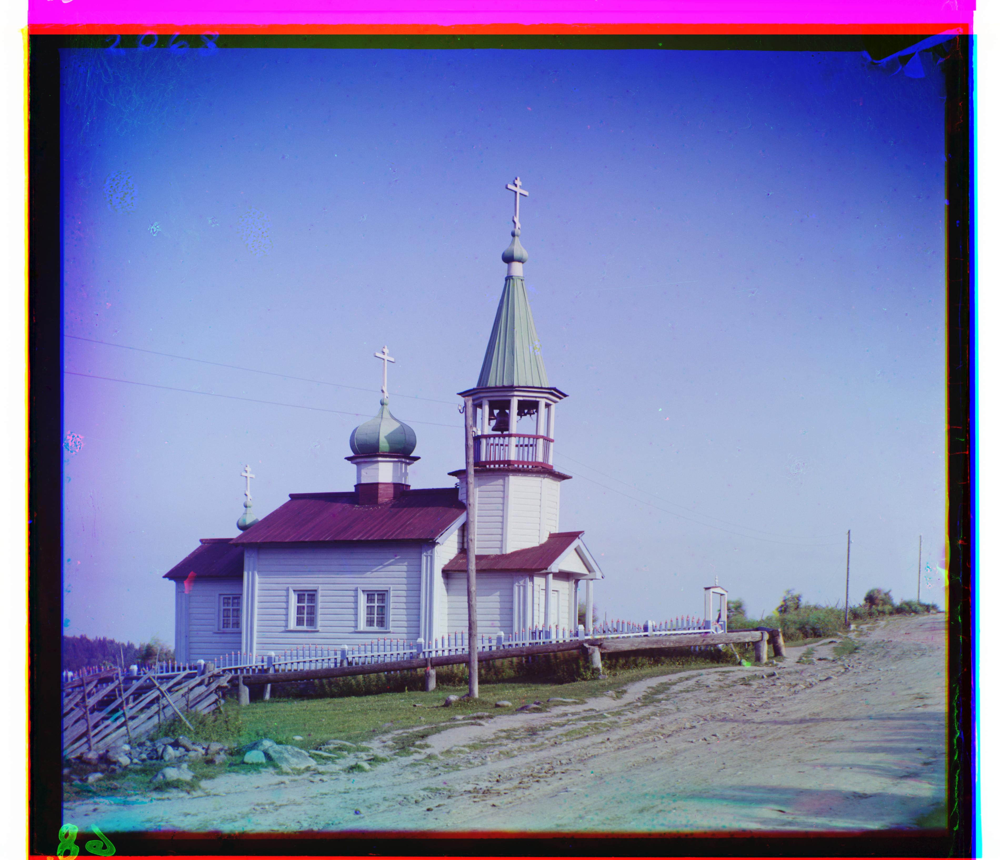
Green Offset: (40, 7)
Red Offset: (131, 11)
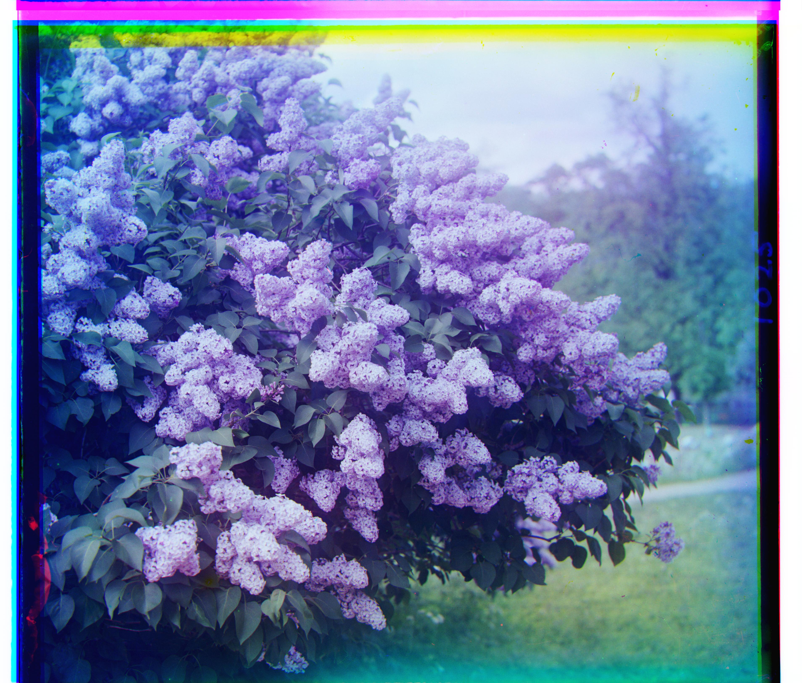
Green Offset: (49, -6)
Red Offset: (96, -24)
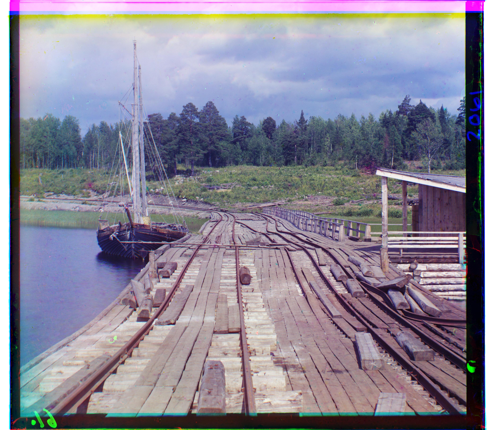
Green Offset: (15, -7)
Red Offset: (83, -16)
Here are three extra images I found from the Library of Congress collection and ran through my algorithm.
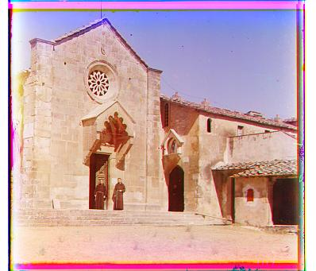
Green Offset: (5, -1)
Red Offset: (11, -1)
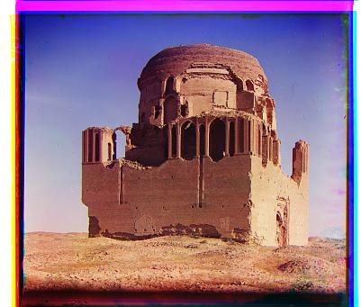
Green Offset: (5, 4)
Red Offset: (12, 7)
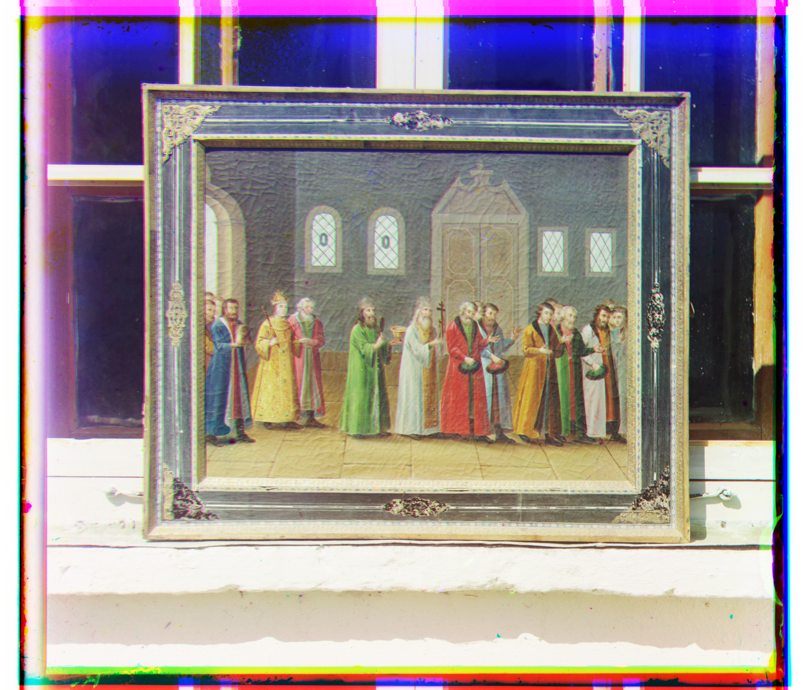
Green Offset: (30, 7)
Red Offset: (70, 6)
When I first ran the basic algorithm a couple of the images completely failed to align. Originally the Emir picture looked completely ruined just like the bad example in the project spec document. The Church image was also noticeably misaligned.
This happened because the L2 norm distance metric assumes that objects have roughly the same brightness across all three color channels. But the Emir is wearing a brilliant blue robe. In the blue glass plate his robe appears incredibly bright but in the red and green negatives his robe appears very dark. Because the brightness values were basically opposites the L2 norm got completely confused trying to match the pixels.
To fix this I used a Sobel filter from the scikit-image library to extract the edges of the images before comparing them. The Sobel filter essentially draws a white outline wherever it sees a sharp edge and turns the rest of the image black. By running the L2 norm on these edge detected outlines rather than the raw pixel colors the algorithm completely ignored the brightness differences and successfully locked onto the physical shapes of the buildings and people. Here are the successfully aligned versions using edge detection.
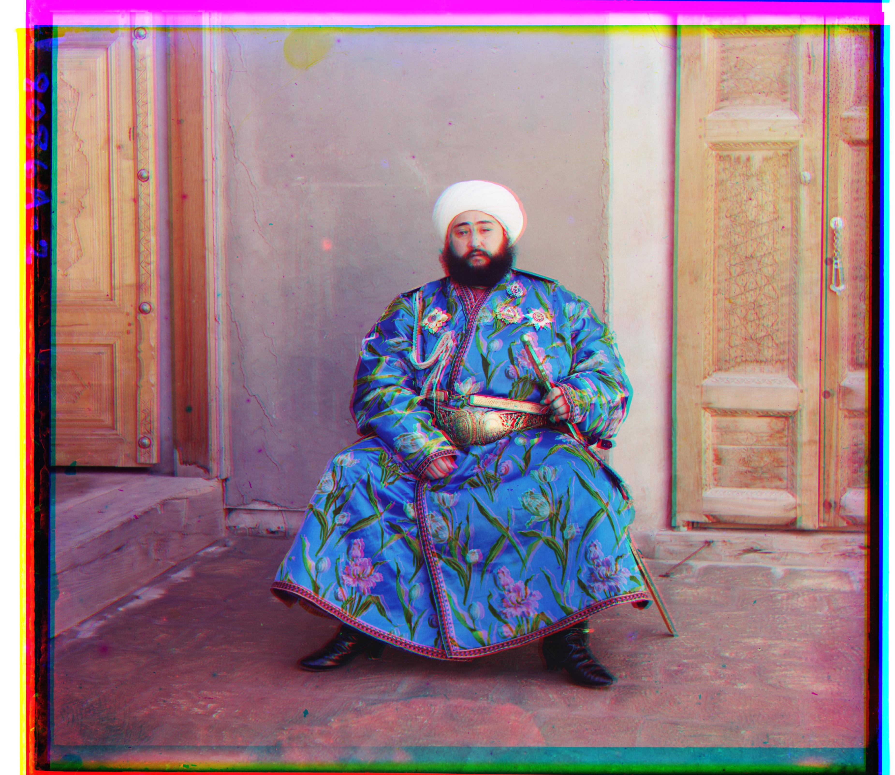
Failed Alignment (L2 Norm)

Fixed Alignment (Edge Detection)
Green Offset: (49, 24)
Red Offset: (107, 40)
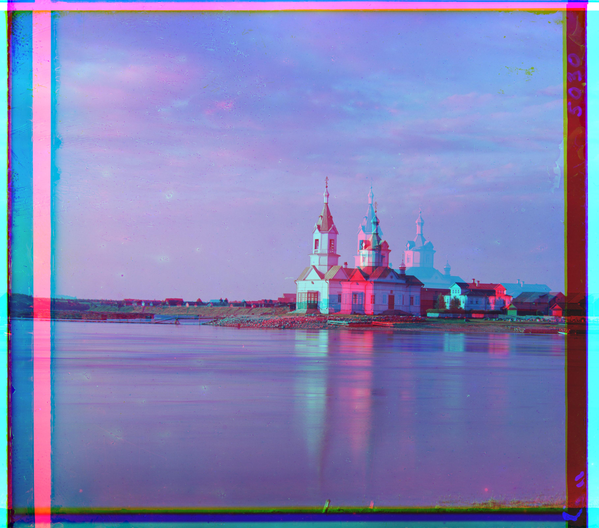
Failed Alignment (L2 Norm)

Fixed Alignment (Edge Detection)
Green Offset: (25, 4)
Red Offset: (58, -4)